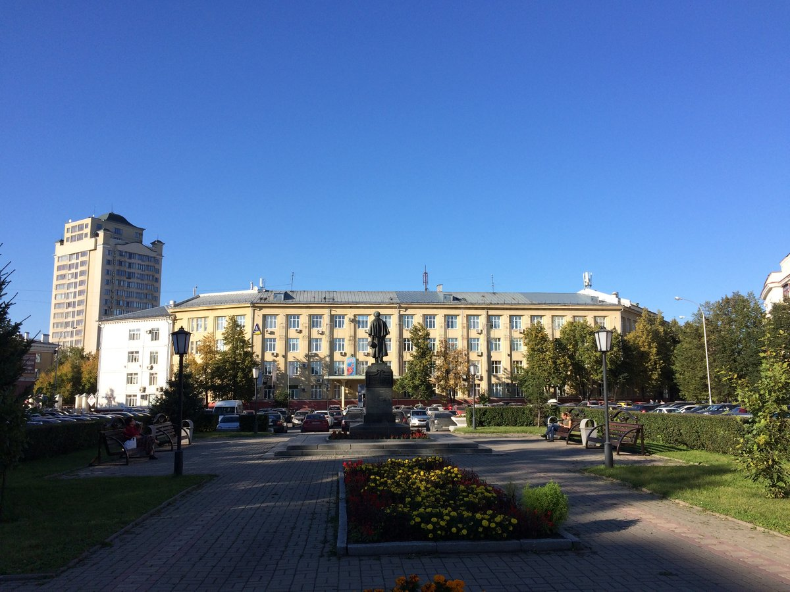

Здание построено в конце 1940-х годов руками немецких военнопленных, которых в то время в Кемерове насчитывалось около 20 тысяч человек.
Еще это место известно тем, что здесь когда-то располагался Старый цирк. Деревянное здание было построено в 1932 году и стало первым крупным культурным учреждением города. Здесь всегда был аншлаг. Выступали абсолютно все звезды советского цирка. На его арене начинал свой путь знаменитый артист, клоун Юрий Никулин.
К концу 60-х годов здание состарилось и пришло в негодность. Цирк закрыли. Городские власти пытались продать постройку на дрова, но желающих не нашлось. Денег на снос здания в казне тоже не имелось. И вот 2 марта 1971 года в 10 часов утра Старый цирк вспыхнул как факел и сгорел дотла. Виновных в пожаре так и не нашли.
